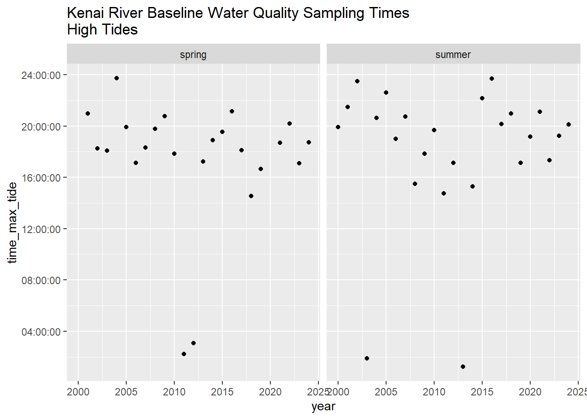
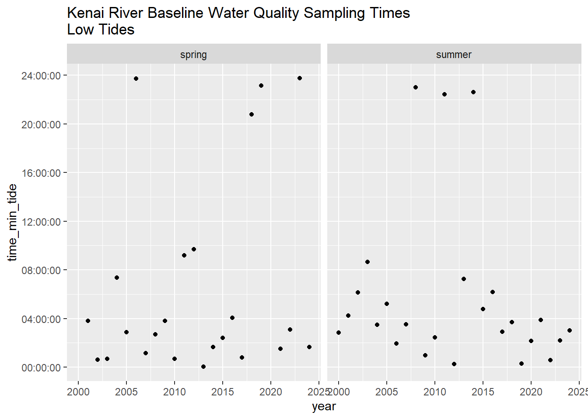

Sample event timing for spring and summer events must be chosen with care each year. Sample date traditionally occurs on Tuesdays, and dates must be chosen with the following considerations:
Some sample types (e.g. fecal coliform) have limited holding periods; e.g., the maximum amount of time that can pass between when a sample is collected and when it must be delivered to the lab. Fecal coliform’s holding time is six hours, for example.
Water quality in both main stem and tributary sites of the lower Kenai River have the potential to be influenced by the tidal pulse. To minimize this influence, we intend to time sampling events with low tide such that potential saltwater influence is minimized. Throughout all analyses in this report, water hardness / salinity is taken into consideration where appropriate.
Boat access is the preferred access method for some sites. However, water levels can sometimes be too low to use prop engines. The timing of both daily and seasonal water levels affects all project logistics choices.
Sampling dates can not be chosen too early in the spring due to ice-out logistics, and the date in the summer can not be too late so as to remain comparable to the existing dataset.
The above stipulations can never all be perfectly accommodated, so some compromise of all the above is typically the aim.
For planning purposes, we use tide prediction values for the mouth of the Kenai River from the NOAA Tide Predictions page (site TWC1983, Kenai River Entrance)
Note: these CSV files are excluded from the GitHub repository because they are too large to sync. To reproduce the analysis, download and save these files locally instead. (See the ReadMe file at data/WQX_downloads in the repository).
Using these same queries in the future will download the most current csv files.
B.1.1 Import data
Import data from local csv files
Show the code
# read in table of known dates from Guerron Orejuela 2016 and NOAA websitekrbwqm_dates <-read_excel("other/input/sample_dates_tides.xlsx") %>%rename(activity_start_date = date) %>%transform(time_max_tide =as.hms(time_max_tide),time_min_tide =as.hms(time_min_tide)) %>%select(-data_entry,-link,-sample_date_source,-tide_source) %>%mutate(julian_day =yday(activity_start_date),year =year(activity_start_date))z <- krbwqm_dates %>%arrange(season,julian_day)
B.2 Dates
Show the code
# Convert julian_day to date formatkrbwqm_dates <- krbwqm_dates %>%mutate(date_format =as.Date(julian_day -1, origin =paste0(year, "-01-01")) )# Define custom breaks for y-axis to reduce crowdingcustom_breaks <-seq(min(krbwqm_dates$julian_day), max(krbwqm_dates$julian_day), by =30)# Create the ggplot with tooltip showing activity_start_datep <- krbwqm_dates %>%ggplot(aes(x = year, y = julian_day, text =paste("Activity Start Date:", activity_start_date) # Tooltip content )) +geom_point() +scale_y_continuous(breaks = custom_breaks,labels =format(as.Date(custom_breaks -1, origin ="2000-01-01"), "%m-%d") # Example origin year ) +labs(title ="Activity Dates by Year",x ="Year",y ="Date (Month-Day)" ) +theme_minimal() +ggtitle("Kenai River Baseline Water Quality Sampling Dates")# Make the plot interactiveggplotly(p, tooltip ="text") # Specify to use the text aesthetic for tooltips
Summary statistics for timing of spring and summer sampling date below.
Show the code
library(kableExtra)# Calculate spring and summer average days with tide timessummary_table <- krbwqm_dates %>%distinct(julian_day, season, year, time_max_tide, time_min_tide) %>%group_by(season) %>%summarise(avg_date =format(as.Date(round(mean(julian_day)), origin =as.Date("2024-01-01")), "%m-%d" ),stdev =round(sd(julian_day)),avg_time_max_tide =format(as.POSIXct(mean(as.numeric(as.POSIXct(time_max_tide, format ="%H:%M:%S"))), origin ="1970-01-01"),"%H:%M:%S" ),avg_time_min_tide =format(as.POSIXct(mean(as.numeric(as.POSIXct(time_min_tide, format ="%H:%M:%S"))), origin ="1970-01-01"),"%H:%M:%S" ),n_years =n(),min_year =min(year),max_year =max(year) )# Create an attractive tablesummary_table %>%kable(format ="html", # Use HTML for rich styling in Quartocaption ="Spring and Summer Average Dates and Tide Times",col.names =c("Season", "Average Date", "+/- Days (StDev)", "Avg Max Tide Time","Avg Min Tide Time", "Number of Years", "Earliest Year", "Latest Year" ),align =c("l", "c", "c", "c", "c", "c", "c", "c") ) %>%kable_styling(bootstrap_options =c("striped", "hover", "condensed", "responsive"),full_width =FALSE,position ="center" ) %>%column_spec(2:8, width ="2cm") # Adjust column widths
Spring and Summer Average Dates and Tide Times
Season
Average Date
+/- Days (StDev)
Avg Max Tide Time
Avg Min Tide Time
Number of Years
Earliest Year
Latest Year
spring
04-28
7
07:25:52
20:28:52
23
2001
2024
summer
07-24
4
08:05:31
19:47:07
25
2000
2024
B.3 Time of Day
Show the code
# dot plotkrbwqm_dates %>%ggplot(aes(year,time_max_tide)) +geom_point() +facet_grid(.~season) +ggtitle("Kenai River Baseline Water Quality Sampling Times\nHigh Tides")

Show the code
krbwqm_dates %>%ggplot(aes(year,time_min_tide)) +geom_point() +facet_grid(.~season) +ggtitle("Kenai River Baseline Water Quality Sampling Times\nLow Tides")

Source Code
---execute: echo: falsedate: "`r Sys.Date()`"format: html: code-fold: true code-tools: true code-summary: "Show the code"---# Appendix: Sample Event Timing## IntroductionSample event timing for spring and summer events must be chosen with care each year. Sample date traditionally occurs on Tuesdays, and dates must be chosen with the following considerations:- Some sample types (e.g. fecal coliform) have limited holding periods; e.g., the maximum amount of time that can pass between when a sample is collected and when it must be delivered to the lab. Fecal coliform's holding time is six hours, for example.- Water quality in both main stem and tributary sites of the lower Kenai River have the potential to be influenced by the tidal pulse. To minimize this influence, we intend to time sampling events with low tide such that potential saltwater influence is minimized. Throughout all analyses in this report, water hardness / salinity is taken into consideration where appropriate.- Boat access is the preferred access method for some sites. However, water levels can sometimes be too low to use prop engines. The timing of both daily and seasonal water levels affects all project logistics choices.- Sampling dates can not be chosen too early in the spring due to ice-out logistics, and the date in the summer can not be too late so as to remain comparable to the existing dataset.The above stipulations can never all be perfectly accommodated, so some compromise of all the above is typically the aim.For planning purposes, we use tide prediction values for the mouth of the Kenai River from the NOAA Tide Predictions page ([site TWC1983, Kenai River Entrance](https://tidesandcurrents.noaa.gov/noaatidepredictions.html?id=TWC1983))```{r setup, include=FALSE}knitr::opts_chunk$set(echo = TRUE, warning = F, message = F)# clear environmentrm(list=ls())# load packageslibrary(tidyverse)library(lubridate)library(readr)library(readxl)library(writexl)library(hms)library(plotly)library(DT)library(readxl)library(openxlsx)library(leaflet)library(DT)library(ggpubr)library(plotrix)library(remotes)library(janitor)select <- dplyr::select# set plotting themes## geom_col plots themecol_theme <- theme(axis.title = element_text(size = 14, face = "bold"), strip.text = element_text(size = 14, face = "bold"), legend.title = element_text(size = 14, face = "bold"), legend.text = element_text(size = 14), axis.text = element_text(size = 14))## geom_points plots themepoints_theme <- theme(axis.title = element_text(size = 14, face = "bold"), strip.text = element_text(size = 14, face = "bold"), legend.title = element_text(size = 14, face = "bold"), legend.text = element_text(size = 14), axis.text = element_text(size = 14), title = element_text(size = 18))# function to exclude multiple items per column'%ni%' <- Negate('%in%')```<br>##### Notes on data sourcingData is sourced from the following queries at <https://waterqualitydata.us> on Feb 24, 2021:CSV download for [sample]{.underline} data: <https://www.waterqualitydata.us/portal/#bBox=-151.322501%2C60.274310%2C-149.216144%2C60.738915&mimeType=csv&dataProfile=narrowResult>CSV download for [site]{.underline} data: <https://www.waterqualitydata.us/portal/#countrycode=US&statecode=US%3A02&countycode=US%3A02%3A122&bBox=-151.322501%2C60.274310%2C-149.216144%2C60.738915&mimeType=csv>Note: these CSV files are excluded from the GitHub repository because they are too large to sync. To reproduce the analysis, download and save these files locally instead. (See the ReadMe file at data/WQX_downloads in the repository).Using these same queries in the future will download the most current csv files.<br>------------------------------------------------------------------------<br>### Import dataImport data from local csv files```{r}# read in table of known dates from Guerron Orejuela 2016 and NOAA websitekrbwqm_dates <-read_excel("other/input/sample_dates_tides.xlsx") %>%rename(activity_start_date = date) %>%transform(time_max_tide =as.hms(time_max_tide),time_min_tide =as.hms(time_min_tide)) %>%select(-data_entry,-link,-sample_date_source,-tide_source) %>%mutate(julian_day =yday(activity_start_date),year =year(activity_start_date))z <- krbwqm_dates %>%arrange(season,julian_day)```## Dates```{r}# Convert julian_day to date formatkrbwqm_dates <- krbwqm_dates %>%mutate(date_format =as.Date(julian_day -1, origin =paste0(year, "-01-01")) )# Define custom breaks for y-axis to reduce crowdingcustom_breaks <-seq(min(krbwqm_dates$julian_day), max(krbwqm_dates$julian_day), by =30)# Create the ggplot with tooltip showing activity_start_datep <- krbwqm_dates %>%ggplot(aes(x = year, y = julian_day, text =paste("Activity Start Date:", activity_start_date) # Tooltip content )) +geom_point() +scale_y_continuous(breaks = custom_breaks,labels =format(as.Date(custom_breaks -1, origin ="2000-01-01"), "%m-%d") # Example origin year ) +labs(title ="Activity Dates by Year",x ="Year",y ="Date (Month-Day)" ) +theme_minimal() +ggtitle("Kenai River Baseline Water Quality Sampling Dates")# Make the plot interactiveggplotly(p, tooltip ="text") # Specify to use the text aesthetic for tooltips```<br>Summary statistics for timing of spring and summer sampling date below.```{r}library(kableExtra)# Calculate spring and summer average days with tide timessummary_table <- krbwqm_dates %>%distinct(julian_day, season, year, time_max_tide, time_min_tide) %>%group_by(season) %>%summarise(avg_date =format(as.Date(round(mean(julian_day)), origin =as.Date("2024-01-01")), "%m-%d" ),stdev =round(sd(julian_day)),avg_time_max_tide =format(as.POSIXct(mean(as.numeric(as.POSIXct(time_max_tide, format ="%H:%M:%S"))), origin ="1970-01-01"),"%H:%M:%S" ),avg_time_min_tide =format(as.POSIXct(mean(as.numeric(as.POSIXct(time_min_tide, format ="%H:%M:%S"))), origin ="1970-01-01"),"%H:%M:%S" ),n_years =n(),min_year =min(year),max_year =max(year) )# Create an attractive tablesummary_table %>%kable(format ="html", # Use HTML for rich styling in Quartocaption ="Spring and Summer Average Dates and Tide Times",col.names =c("Season", "Average Date", "+/- Days (StDev)", "Avg Max Tide Time","Avg Min Tide Time", "Number of Years", "Earliest Year", "Latest Year" ),align =c("l", "c", "c", "c", "c", "c", "c", "c") ) %>%kable_styling(bootstrap_options =c("striped", "hover", "condensed", "responsive"),full_width =FALSE,position ="center" ) %>%column_spec(2:8, width ="2cm") # Adjust column widths```<br>## Time of Day```{r}# dot plotkrbwqm_dates %>%ggplot(aes(year,time_max_tide)) +geom_point() +facet_grid(.~season) +ggtitle("Kenai River Baseline Water Quality Sampling Times\nHigh Tides")krbwqm_dates %>%ggplot(aes(year,time_min_tide)) +geom_point() +facet_grid(.~season) +ggtitle("Kenai River Baseline Water Quality Sampling Times\nLow Tides")``````{r echo = F}knitr::knit_exit()``````{r, echo = F, cache = TRUE, eval = F}# read in tide records; slow, time consuming (~5 min)#library(rtide)#tide_records <- tide_height(# stations = "Nikiski", # minutes = 60L, # from = as.Date("2000-01-01"), # to = as.Date(Sys.Date()), # tz = "UTC", # harmonics = rtide::harmonics# )# calculate min and max daily tides# high and low tides will be rounded to nearest hour\# # thought: would be a good idea to stick with using rtides package in case we wwant to match sample time w/ tide heigt in the future#z <- tide_records %>%# mutate(date = date(DateTime),# time = hms(DateTime)) %>%# group_by(date,time) %>%# summarise(min_tide = min(TideHeight))```delete below here??<br>How many years of Kenai Watershed Forum data do we have in the waterqualitydata.us database?```{r}t <- dat %>%filter(OrganizationFormalName =="Kenai Watershed Forum(Volunteer)*") %>%filter(!is.na(ActivityStartDate)) %>%summarise(min_date =min(date(ActivityStartDate)),max_date =max(date(ActivityStartDate)))datatable(t)```<br>[**It appears that data after spring 2013 is not in the EPA database.**]{.underline} (Confirmed w/ ADEC in spring 2021).Temporary solution - use data compiled from PDFs on the KWF local server.Import data from local KWF server:```{r}# import compiled data 2014 - 2020 form local kwf server# note: we will not need this step once everything's uploaded to WQXkwf_dat <-read_excel("data/Compiled_KRBWQM_data_2014_2020.xlsx", sheet ="Master") %>%select(-Year,-Season,-ChannelType,-TestType,-Code,-Duplicate,-Lab) %>%# create and rename columns to match EPA database formatmutate("OrganizationFormalName"="Kenai Watershed Forum(Volunteer)*","MonitoringLocationTypeName"="River/Stream") %>%rename("ActivityStartDate"="Date","MonitoringLocationName"="Site","CharacteristicName"="Parameter","ResultMeasureValue"="Result","ResultMeasure/MeasureUnitCode"="Units") %>%# match column formats to EPA databasetransform(ResultMeasureValue =as.double(ResultMeasureValue))# join site coordinates to 2014-2020 datasites <-read.csv("data/sampling_sites/site_names_matching.csv") %>%rename("MonitoringLocationName"="name_2014_2020")kwf_dat <-left_join(kwf_dat,sites)# join kwf and epa datadat <-bind_rows(dat,kwf_dat)```<br>What kind of sites are present in our data set?```{r}t <-data.frame(unique(dat$MonitoringLocationTypeName))datatable(t)```<br>Retain surface water sites only. Exclude well sampling sites.```{r}# create and apply filtersurface <-c("River/Stream","Lake","River/Stream Perennial","BEACH Program Site-Ocean","BEACH Program Site-River/Stream","Lake, Reservoir, Impoundment","Stream","Spring")dat <- dat %>%filter(MonitoringLocationTypeName %in% surface)```<br>Retain a subset of useful columns```{r}# retain select subset of potentially useful columnsdat <- dat %>%select("OrganizationFormalName","ActivityStartDate" ,"ActivityStartTime/Time","ActivityStartTime/TimeZoneCode" , "MonitoringLocationIdentifier" , "CharacteristicName" , "ResultMeasureValue" , "ResultMeasure/MeasureUnitCode" , "ResultStatusIdentifier" , "ResultValueTypeName" , "ResultAnalyticalMethod/MethodIdentifier" ,"ResultAnalyticalMethod/MethodIdentifierContext","ResultAnalyticalMethod/MethodName" , "MonitoringLocationName" , "MonitoringLocationTypeName" , "HUCEightDigitCode" , "DrainageAreaMeasure/MeasureValue" , "DrainageAreaMeasure/MeasureUnitCode" , "LatitudeMeasure" , "LongitudeMeasure" , "SourceMapScaleNumeric" , "HorizontalAccuracyMeasure/MeasureValue" ,"HorizontalAccuracyMeasure/MeasureUnitCode" ,"HorizontalCollectionMethodName" , "HorizontalCoordinateReferenceSystemDatumName" ,"VerticalMeasure/MeasureValue" , "VerticalMeasure/MeasureUnitCode" , "VerticalAccuracyMeasure/MeasureValue" , "VerticalAccuracyMeasure/MeasureUnitCode" , "VerticalCollectionMethodName" , "VerticalCoordinateReferenceSystemDatumName") # remove extraneous text from "Kenai Watershed Forum(Volunteer)*"dat <- dat %>%mutate(OrganizationFormalName =gsub("\\s*\\([^\\)]+\\)","",as.character(dat$OrganizationFormalName))) %>%mutate(OrganizationFormalName =str_remove(OrganizationFormalName,"\\*"))# to do: adapt vignette for multiple sites:# https://github.com/USGS-R/EGRET# potentially also useful: https://waterdata.usgs.gov/nwis/inventory?search_criteria=lat_long_bounding_box&submitted_form=introduction# additional dataframe prepdat <- dat %>%transform(ActivityStartDate =date(ActivityStartDate)) %>%# remove missing observationsfilter(!is.na(ResultMeasureValue))```<br>------------------------------------------------------------------------### Exploratory Data AnalysisNow, how many years of data do we have, including from the waterqualitydata.us database AND the KWF local server?```{r}dat %>%filter(OrganizationFormalName =="Kenai Watershed Forum") %>%summarise(min_date =min(ActivityStartDate),max_date =max(ActivityStartDate))```<br>How many data points total from water quality grab samples?```{r}exclude_parameters <-c("Temperature, air", "Temperature, water")(z <- dat %>%filter(OrganizationFormalName =="Kenai Watershed Forum", CharacteristicName %ni% exclude_parameters) %>%distinct() %>%count())```<br>How many different kinds of substances have we measured ?```{r}dat %>%filter(OrganizationFormalName =="Kenai Watershed Forum") %>%distinct(CharacteristicName) %>%count()# note: some substances are labeled "(surr)" for surrogate. Need to research what this means; subtract form total count for now```<br>What are the names of all of substances have we measured ?```{r}param <- dat %>%filter(OrganizationFormalName =="Kenai Watershed Forum") %>%distinct(CharacteristicName) datatable(param)```<br>Create and export table of site names```{r}# create summary tabletbl <- dat %>%filter(OrganizationFormalName =="Kenai Watershed Forum", CharacteristicName %ni% exclude_parameters) %>%group_by(MonitoringLocationName,LatitudeMeasure,LongitudeMeasure) %>%summarise(min_date =min(ActivityStartDate),max_date =max(ActivityStartDate)) %>%rename("latitude"="LatitudeMeasure","longitude"="LongitudeMeasure")# export csvwrite.csv(tbl,"data/sampling_sites/2000_2014_sitenames.csv", row.names = F)```